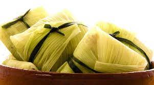

Humita deriva del Quechua «Humint'a» y es un plato milenario que se consume por los pueblos originarios desde hace años, que cultivaban
el maíz de los Valles de la zona pre andina, como Salta, Jujuy, Tucumán, La Rioja. Dicen que hay un tipo de humita en cada región y por
cada persona que lo prepara. El relleno de las humitas es el balance perfecto entre el dulce del zapallo y el choclo y el picante
de las especias. En algunos lugares suele agregarse el chile como ingrediente, lo cual lo vuelve mucho más picante y sólo apto para
valientes. Es un plato ideal para acompañar con un buen vino blanco torrontés riojano de la zona.

Ingredientes
Choclo rallado
Zapallo amarillo
Agua
Cebollas
Queso cremoso
Zapallito redondo
Chalas
Sal
Pimienta
Pimenton ahumado
Preparacion paso a paso
Limpiar los choclos y reservar las mejores chalas
Usar las que tengan buen aspecto y no esten duras
Lavarlas bien y secarlas
Con las chalas restantes cortar tiras bien finas para usar como hilo
Rallar todas las verduras
Saltear las verduras ralladas con aceite, pimienta, sal y pimenton
Cocinar hasta tener una textura blanda
Poner las chalas en forma de cruz una sobre otra, por encimad del relleno y cerrar bien
Apretarlas bien con el hilo para que queden bien atadas
Colocar en una olla profunda apiladas con cuidado
Cubrir con agua y cocinar a fuego medio por 40 minutos aproximadamente